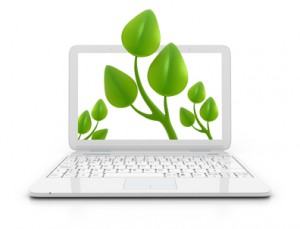

Vorteile papierloses Büro
Vorteile des papierlosen Büros
Manchmal bin mit meiner Beratung und Werbung für das papierlose Büro fast missionarisch unterwegs und bin immer wieder mal erstaunt über die Fragen nach den Vorteilen oder die Einwände. Im Rahmen des Leitfadens den ich gerade schreibe, möchte ich noch mal kurz darauf eingehen, was die großen Vorteile sind, privat und beruflich. Und alle Punkte sehe ich natürlich auch als Gewinn für Kunden, die sich für eine papierlose Arbeitsweise entscheiden. Für den ein oder anderen mag eine andere Priorität gelten. Manch einen halten auch persönliche Arbeitsweisen ab. Stichhaltige Argumente gegen ein papierloses/papierarmes Büro gibt es aus meiner Sieht jedoch nicht.
Meine Gründe ein papierloses Büro zu leben und mich beruflich dafür einzusetzen sind:
1. Mobilität und Freiheit
Ich fühle mich absolut frei an jedem Ort der Welt zu arbeiten und mit meinen Kunden zu kommunizieren. Mein Macbook Air (Gewicht 1,08 Kg) fasst alle Informationen und Programme, die ich benötige. Ich könnte aus dem Stand für ein Jahr ins Ausland gehen und benötigte kein einziges Papier außer meinem Reisepass. Alle fürs Business benötigten Daten sind ohnehin auf dem Rechner, aber auch alles was man privat benötigen könnte, wie Krankenkassendokumente o.ä. ist entsprechend abgespeichert. Da alle Daten in der Cloud gesichert sind, wäre es auch kein Problem, sollte das Macbook kaputt gehen oder abhanden kommen. Ok, für eine Wiederherstellung benötige ich Internet, aber in zwei Stunden hätte ich Dateien und Programme zurück. Und über die Verfügbarkeit des Internets muss man sich auch nicht mehr wirklich Gedanken machen. Vielleicht hat man noch nicht zu jeder Zeit an jedem Ort Internet, aber die Tendenz der Verfügbarkeit ist unbestritten steigend.
2. Zeitersparnis durch höchst effizientes Arbeiten
Alle Informationen digital und ohne Medienbrüche zu verarbeiten spart enorm viel Zeit. Nur noch elektronisch abzulegen und zu archivieren ist um ein vielfaches schneller als das in Papierform zu tun. Das Gleiche gilt für die spätere Entsorgung. Inzwischen scanne ich auch nur noch wenig, da nahezu alle Geschäftspartner auf meine Bitte hin elektronisch mit mir kommunizieren. Wenn ich manchmal durch die Stadt gehe und in Bürofenster schaue und Wände voller Ordner sehe, und mir ausmale, wie viel Zeit es kostet, diese zu „produzieren“, jedes Dokument abzulegen und für die benötigte Information immer wieder aufzustehen, wird mir durch die Unternehmerbrille ganz „mulmig“. Verrückt dabei ist, dass alle permanent über Zeitnot klagen, aber kaum jemand bereit ist, etwas zu verändern, loszulassen.
3. Einfache Zusammenarbeit mit allen Geschäftspartnern
Dank Cloudspeicherung ist mir eine effiziente Zusammenarbeit mit freien Mitarbeitern, Kooperationspartnern und selbst Lieferanten möglich über Büro- und Landesgrenzen hinweg der leicht möglich. Die zu bearbeitenden Dateien werden in der Cloud „in echt“ gemeinsam bearbeitet, anstatt sie per Mail hin und her zu schicken und jedes Mal in einer neuen Version abzuspeichern. Per Teamchat bekomme ich Infos, wann was fertig ist oder getan werden muss. Nach einer ersten Einführung gelingt es schnell, neue Geschäftspartner in dieses System zu integrieren.
4. Nachhaltigkeit im Office

Im Jahr 2014 habe ich mit Zeitgewinn Hamburg weniger als eine Packung Papier verbraucht. Damit natürlich auch keine Tinte, keine Ordner. Wenn erst mal das Ausdrucken wegfällt, benötigt man auch viele andere Büromaterialien wie Büroklammern, Tacker usw. nicht mehr. Das spart material und Platz. Zur Nachhaltigkeit gehört für mich aber auch, sorgsam mit Strom umzugehen und Altgeräte fachgerecht zu entsorgen. In den meisten Fällen gebe ich meine ausgemusterten Geräte noch im Freundes- oder Verwandtenkreis weiter, bevor sie im Wertstoffhof entsorgt werden.5. Zukunfts- und Wettbewerbsfähigkeit
Jeder Unternehmer oder Selbständige wird es schon gelesen haben, die Zukunft der Unternehmen ist digital. Das mag jeder persönlich bewerten wie er möchte. Ich denke aber, um als Unternehmen wettbewerbsfähig zu bleiben, damit seiner Verantwortung als Arbeitgeber gerecht zu werden, muss man sich dieser Entwicklung stellen und das Beste für das eigene Unternehmen herausholen. Fragen könnten sein: Wie kann man mit der IT-Nutzung einen zusätzlichen Kundennutzen bieten oder Prozesse beschleunigen und vereinfachen, und damit Zeit für Kundenpflege, Projektentwicklung oder Weiterbildung gewinnen. Aber um ehrlich zu sein, auch von den Mitarbeitern würde ich mir oft mehr Einsicht in das Thema Digitalisierung wünschen. Sie müssten auch ein dringendes Interesse daran haben, dass sowohl Unternehmen wie auch die persönlichen Skills wettbewerbsfähig bleiben.
Je früher Sie das Thema angehen, desto besser. Schauen Sie sich die Unternehmen an, die in den letzten Jahren unvorstellbar schnell gewachsen sind (Airbnb, Paypal, Uber, Dropbox & Co. und nicht zuletzt natürlich Google). Vereinfacht kann man sagen, alle bieten IT-basiert Dienstleistungen, deren komplette Abwicklung und Administration IT-basiert funktioniert. Sie sind schon lange mehr als eine ernstzunehmende Konkurrenz für die althergebrachten Anbieter im jeweiligen Bereich. Aber auch auf produzierende Industrieunternehmen kommen mit der weiteren Verbreitung von 3-D Druck große Veränderungen zu. Viele kleine Betriebe könnten die bessere Nutzung der IT, z.B. eine vernünftige Homepage, Präsenz in den Sozialen Medien, weitestgehend elektronische Administration derzeit noch als Alleinstellungsmerkmal und Wettbewerbsvorteil nutzen. Wer sich auf das Thema papierloses Büro einlässt, hinterfragt die Arbeitsprozesse und Informationsflüsse kritisch, macht sich Gedanken über schnell Medienbruchfreie Workflows und schaut genauer auf seine Ressourcen. Das hat noch keinem Unternehmen geschadetJ.
Sich dem Thema stellen heißt für mich, positive offen sein, sich mit den Möglichkeiten vertraut zu machen, die Nutzung zu trainieren und die permanente Veränderung nicht als Last, sondern als Chance zu begreifen, auch wenn es zugegebenermaßen hin und wieder auch anstrengend sein kann. Und genau das müssen Führungskräfte natürlich vorleben, bzw. dazu ermuntern, motivieren.
6. Platzeinsparung
 Der für mein Office benötigte Platz reduziert sich rasant. Für Office und Privat habe ich insgesamt noch drei Ordner, die vermutlich auch in den nächsten Wochen ausgemustert werden. Da es auch einen Großteil der anderen o.g. Office-Materialien nicht mehr braucht, können die Schränke und Regale immer kleiner werden. Da ich ohnehin die meiste Zeit bei meinen Kunden vor Ort bin, habe ich mich vor einigen Jahren schon sehr bewusst für ein Home Office entschieden. Je weniger Platz dafür benötigt wird, desto leichter ist ein Office elegant in die Wohnräume zu integrieren. Obwohl ich zugegebenermaßen noch nicht am Ende der Fahnenstange angekommen bin. Ich strebe den Zustand an, an dem man gar nicht mehr sieht, dass es sich um einen Office-Bereich handelt. Das bedeutet, ich brauche noch eine clevere Lösung um meinen geliebten großen Bildschirm elegant verschwinden zu lassen. Hat jemand eine Idee?
Der für mein Office benötigte Platz reduziert sich rasant. Für Office und Privat habe ich insgesamt noch drei Ordner, die vermutlich auch in den nächsten Wochen ausgemustert werden. Da es auch einen Großteil der anderen o.g. Office-Materialien nicht mehr braucht, können die Schränke und Regale immer kleiner werden. Da ich ohnehin die meiste Zeit bei meinen Kunden vor Ort bin, habe ich mich vor einigen Jahren schon sehr bewusst für ein Home Office entschieden. Je weniger Platz dafür benötigt wird, desto leichter ist ein Office elegant in die Wohnräume zu integrieren. Obwohl ich zugegebenermaßen noch nicht am Ende der Fahnenstange angekommen bin. Ich strebe den Zustand an, an dem man gar nicht mehr sieht, dass es sich um einen Office-Bereich handelt. Das bedeutet, ich brauche noch eine clevere Lösung um meinen geliebten großen Bildschirm elegant verschwinden zu lassen. Hat jemand eine Idee?
Zusammenfassung: Aus meiner unternehmerischen Sicht hat das papierlose Büro nicht nur viele Vorteile, sondern ist, um wettbewerbsfähig zu bleiben, absolute Notwendigkeit. Privat genieße ich die Vereinfachungen, den Freiheits- und Platzgewinn, der damit einhergeht sehr.
Weitere Artikel

Digitale Tools für Zusammenarbeit im Office
E-Mail, Digitale Ablage und eine Branchensoftware sind schon lange nicht mehr genug für effiziente Zusammenarbeit. Doch bevor Sie sich in einem Dschungel an digitalen Werkzeugen verlieren, sollten Sie sich über die Systematik …

Veränderung braucht Gewohnheit
Sowohl im Berufs-als auch im Privatleben sind wir ständig im Veränderungsmodus. Manche Veränderungen wollen wir umsetzen, manche müssen wir mitmachen. Wir alles wissen, dass Veränderung nie leicht sind und je länger wir etwas auf …